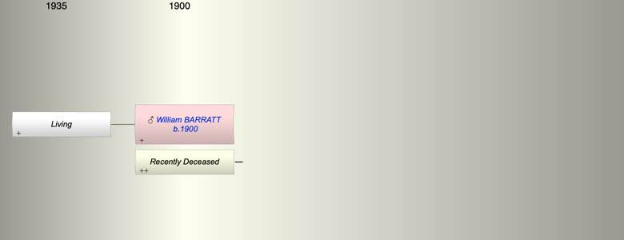

| [Index] |
| William E BARRATT (1900 - ) |
|  |
| b. 06 Apr 1900 |
| m. Late |
| Near Relatives of William E BARRATT (1900 - ) | ||||||
| Relationship | Person | Born | Birth Place | Died | Death Place | Age |
| Father in Law | Thomas Alfred MARTIN | |||||
| Mother in Law | Beatrice Elizabeth UNKNOWN | |||||
| Self | William E BARRATT | 06 Apr 1900 | ||||
| Wife | Living or Recently Deceased | |||||
| Daughter | Living or Recently Deceased | |||||
| Son in Law | Living or Recently Deceased | |||||
| Events in William E BARRATT (1900 - )'s life | |||||
| Date | Age | Event | Place | Notes | Src |
| 06 Apr 1900 | William E BARRATT was born | ex 1939 Register | |||
| Created on a Mac™ using iFamily for Mac™ on 12 Sep 2023 |